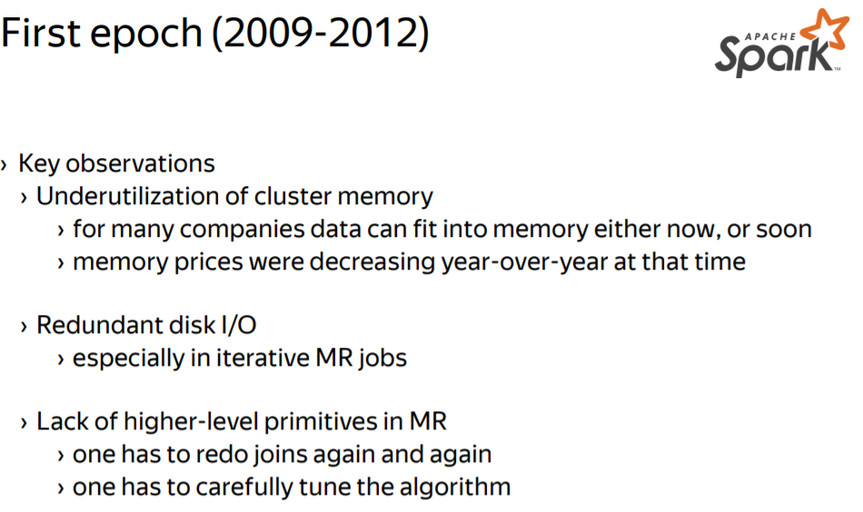
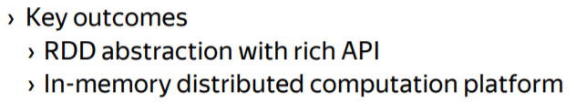
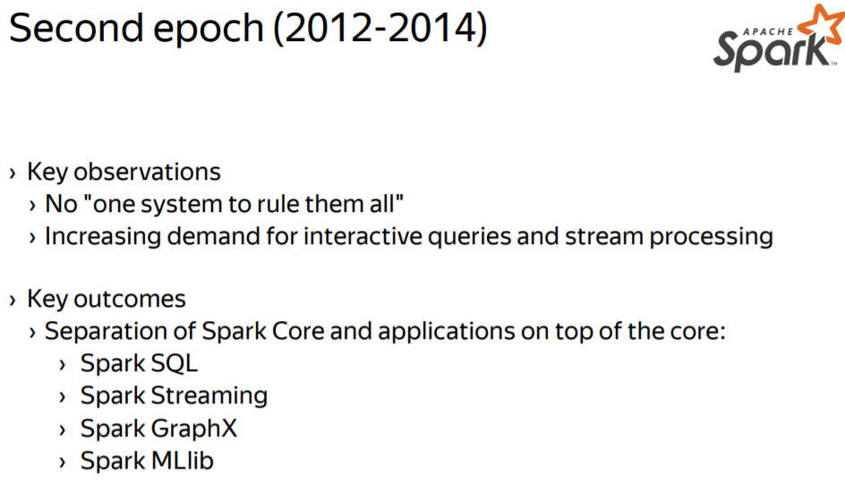
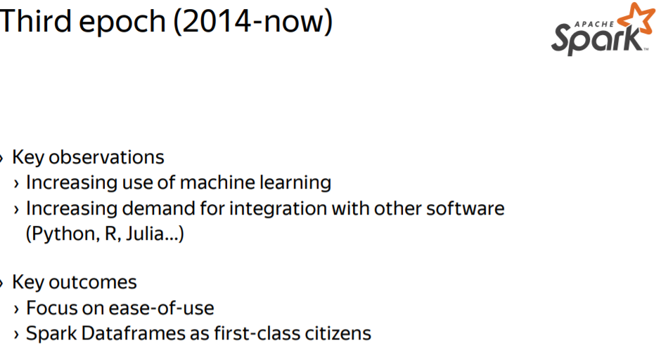

This is course note of Big Data Essentials: HDFS, MapReduce and Spark RDD
Apache Spark
Apache Spark:a modern distributed fault tolerant computation platform.
History of Apache Spark:
   
RDDs
RDD(Resilient Distributed Dataset): a core abstraction enabling both an efficient execution for a computation, and a flexible and convenient formalism to define computations.
- Resilient — able to withstand failures
- Distributed — spanning across multiple machines
- Formally, RDD is a read-only, partitioned collection of records
- To say that the dataset is an RDD, the dataset must adhere to the RDD interface.
The dataset must be: - able to enumerate its partitions by implementing the partition's function.
1
2
3
4
- The partition is an opaque object for the framework. It is passed back to the iterator function of the RDD, when the framework needs to read the data from the partition.
```iterator(p: Partition, parents: Array[Iterator]) -> Iterator
- able to enumerate its dependencies and provide an array of dependency objects.
1
2
3
4
5
6
7
8
9
10
11
12
13
14
15
16
17
18
19
20
21
22
23
24
25
26
27
28
29
30
31
32
33
34
35
36
37
38
39
40
41
42
43
44
45
46
47
48
49
50
51
52
53
54
55
56
57
58
59
60
61
62
63
64
65
66
67
68
69
70
71
72
73
74
75
76
77
78
79
80
81
82
83
84
85
86
87
88
89
90
91
92
93
94
95
96
97
98
99
100
101
102
103
104
105
106
107
108
109
110
111
112
113
114
115
116
117
118
119
120
121
122
123
124
125
126
127
128
129
130
131
132
133
134
135
136
137
138
139
140
141
142
143
144
145
146
147
148
149
150
151
152
153
154
155
156
157
158
159
160
161
162
163
164
165
166
167
168
169
170
171
172
173
174
175
176
177
178
179
180
181
182
183
184
185
186
187
188
189
190
191
192
193
194
195
196
197
198
199
200
201
202
203
204
205
206
207
208
209
210
211
212
213
214
215
216
217
218
219
220
221
222
223
224
225
226
227
228
229
230
231
232
233
234
235
236
237
238
239
240
241
242
243
244
245
246
247
248
249
250
251
252
253
254
255
256
257
258
259
260
261
262 - The dependency object maps partitions of the dataset to the dependencies that are partitions of the parent dataset.
- Those parent partitions are injected into the iterator call when creating a reader.
- **Typed.** every item in RDD has the same, known type.
- typedness is an important property to catch bugs early on before the actual execution
- e.g. RDD[strings], or an RDD[integers].
<img src="./images/rdd1.png" width="350" />
## Why do we need a new abstraction?
**Example**: iterative computations (K-means, PageRank, …)
- relation between consequent steps is known only to the user code not the framework
- framework has no capabilities to optimize the whole computation
- framework must reliably persist data between steps thus generating excessive I/O (even if it is temporary data)
>In this scenario,Spark is trying to keep the data in the memory, effectively eliminates an intermediate disk persistence, and thus improving the completion time.
**Example**: joins
- join operation is used in many MapReduce applications
- not-so-easy to reuse code
## Example: a binary file in HDFS
> Implement the necessary functions to make the binary file in RDD
<img src="./images/rdd2.png" width="350" />
- To implement the **partition**'s function: lookup the blocks for NameNode, create a partition for every block, and return the partitions.
- To implement the **iterator**'s function: extract the block information from the partition, and use it to create a reader from HDFS.
- To implement the **dependencies**' function: File reading does not depend on any other RDD, nor on any other partition. So implementing the dependencies function is trivial. It returns an empty array
## Example: a data* file in HDFS
> reading records from the file rather than a raw bytes
<img src="./images/rdd3.png" width="350" />
## Example: an in-memory array
The simplest way to make the array in RDD is to pretend that there is a single partition with the whole array. In this case, the partition object keeps a ***reference*** to the array, and the iterator function uses this reference to create an iterator.
<img src="./images/rdd4.png" width="350" />
## Example: a sliced* in-memory array
> slice the array into chunks to gain parallelism
The partition corresponds to the chunk of the source array.
*partitions are handled in parallel.*
<img src="./images/rdd5.png" width="350" />
## Summary
- **RDD is a read-only, partitioned collection of records**
- The collection of the dataset must provide information about its partitions, and provide means to create an iterator over the partition.
- a developer can access the partitions and create iterators over them
- RDD tracks dependencies (to be explained in the next video)
- Examples of RDDs
- Hadoop files with the proper file format
- In-memory arrays
# Transformation
**Two ways to construct RDDs:**
- Data in a stable storage
- Example: files in HDFS, objects in Amazon S3 bucket, lines in a text file, …
- RDD for data in a stable storage has no dependencies
- From existing RDDs by applying a transformation
- Example: filtered file, grouped records, …
- RDD for a transformed data depends on the source data
**Transformation**:
- Allow you to create new RDDs from the existing RDDs by specifying how
to obtain new items from the existing items
- The transformed RDD depends implicitly on the source RDD
Note: Datasets are immutable in Spark, and you cannot modify data in-place.
## Example: map, flatMap
**map**:
- Def: map(f: T -> U): RDD[T] -> RDD[U]
- returns a mapped RDD with items f(x) for every x in the source RDD
<img src="./images/trans2.png" width="350" />
**flatMap**:
- Def: flatMap(f: T -> Array[U]): RDD[T] -> RDD[U]
- same as map but flattens the result of *f*
- generalizes map and filter
## Example: filter
**filter**:
- Def: filter(p: T -> Boolean): RDD[T] -> RDD[T]
- returns a filtered RDD with items satisfying the predicate *p*
<img src="./images/trans1.png" width="350" />
**Filtered RDD**:
- **partitions**: transformed RDD's mostly the same as source one-->*reuse partitions of the source RDD* as there is no need to change the partitioning.
- **dependencies**: every field of partition depends on the source partition. You can establish this relation by providing a dependency object that establishes one-to-one correspondence between the filtered and the source partitions.
- **iterator**: when creating an iterator over the filter partition:
- Spark would inject an iterator of the source partition into the iterator function called
- reusing the parent iterator.
- When requested for the next value, you can pull values from the parent iterator until it returns you an item that satisfies the predicate.
<img src="./images/trans3.png" width="350" />
### Lazy iterator
Actual filtering happens not at the creation time of Y, but at the access time to the iterator over a partition of Y.The filtering starts to happen only when you start to pull items from the iterator.
Same holds for other transformations – they are lazy,i.e. they compute the result only when accessed.
### On closures
<img src="./images/trans4.png" width="350" />
### (Partition)Dependency graph
Whenever you apply a transformation to the RDD, you implicitly construct a dependency graph on the RDDs
- This graph is used by the framework to schedule jobs
<img src="./images/trans5.png" width="350" />
## Keyed Transformation
<img src="./images/trans6.png" width="400" />
### Grouped RDD
- partition the key space
- using the hash partition then to compute the values in the resulting partition
- **Shuffle**: redistribute all the values between all the partitions.
- scan over the entire source RDD to select only the pairs that belong to the output partition.
> Differnt from flatMap like transformation, a single output partition depends on all the input partitions.
<img src="./images/trans9.png" width="400" />
#### Narrow & Wide dependencies
<img src="./images/trans10.png" width="400" />
## Cogroup Transformation
<img src="./images/trans7.png" width="400" />
The cogroup transformation allows you to compute any kind of a join between two data sets.
### Inner join
That is all triples (k, x, y) where (k, x) is in X and (k, y) is in Y
--> apply the ```flatMap``` transformation on top of the result of the cogroup transformation.
## Joins Transformation
The join transformation produces the inner join of two data sets.
**inner join:** If the key is present only in the one side of the join that is in one data set. Then it is omitted from the result
**outer join:** one-sided keys are added to the result with appropriate null values.
<img src="./images/trans8.png" width="400" />
## MapReduce in Spark
You can express any MapReduce computation in Spark as the ```flatMap``` followed by the ```groupByKey```, followed by one more ```flatMap```.
<img src="./images/trans11.png" width="400" />
## Summary
Transformation
- is a description of how to obtain a new RDD from existing RDDs
- is the primary way to “modify” data (given that RDDs are immutable)
Properties:
- Transformations are lazy, i.e. no work is done until data is explicitly requested
- There are transformations with narrow and wide dependencies
- MapReduce can be expressed with a couple of transformations
- Complex transformations (like joins, cogroup) are available
# Actions
**Driver & executors**:
- When you write and invoke your Spark application, driver ***runs within the driver program.***
- Driver program drives the execution of your Spark application
- Driver delegates tasks to executors to use cluster resources
- When something must be done with the data, the driver schedules tasks to be executed by executors.
- In *local* mode, executors are collocated with the driver
- In *cluster* mode, executors are located on cluster machines--> allowing you to use the cluster for a computation
**Actions**:
- Triggers data to be materialized and processed on the executors and
then passes the outcome to the driver
> Actions, together with a transformation code, are executed elsewhere, not in your driver program. Your driver program receives only the outcome.
Spark does a great job of abstracting away the execution details, and that improves your developer productivity and code readability.
- **Example**: actions are used to collect, print and save data
## Frequently used actions
- ```collect``` action collects the result into the memory of the driver program.
- intended to be used when the output is small enough to fit into the driver's memory.
- ```take``` action takes the given number of items from a data set and passes them back to the driver.
- tries to use only the first partition of a data set to optimize the completion time.
<img src="./images/action1.png" width="400" />
When the result is large enough, you may want to save it to HDFS for example. Doing so by collecting items in the driver will quickly run out of memory.
There are special family of safe actions that do heavy work on the executor side and return a confirmation to the driver.
- ```SaveAsText``` file is used for full debugging or for simple applications
- ```SaveAsHadoopFile``` leverages Hadoop file formats to serialize data-->common way to save data to HDFS.
<img src="./images/action2.png" width="400" />
If you need to run your own code over a data set, there are ```foreach``` and ```foreachPartition``` actions that invoke your function on the executor side.
You can use this function to persist your data in your custom database for example, or to send data over the wire to an external service, or anything else.
<img src="./images/action3.png" width="400" />
## Summary
- Actions trigger computation and processing of the dataset
- Actions are executed on executors and they pass results back to the driver
- Actions are used to collect, save, print and fold data
# Resiliency
How it is possible to continue operation despite machine failures in the cluster?
## Fault-tolerance in MapReduce
Two key aspects:
- reliable storage for input and output data
- once data is stored in HDFS it is safe
- deterministic and side-effect free execution of mappers and reducers
- if the computation is deterministic, and has no side effects, the framework can restart it multiple times, and get the same result every time
<img src="./images/resi1.png" width="400" />
## Fault-tolerance in Spark
Same two key aspects:
- reliable storage for input and output data
- deterministic and side-effect free execution of
transformations(including closures)
- Spark assumes that every transformation is deterministic, and free of side-effects, to be able to restart any failed computation
**Determinism** — every invocation of the function results in the same returned value
- e. g. do not use random numbers, do not depend on a hash value order
**Freedom of side-effects** — an invocation of the function does not change anything in the external world
- e. g. do not commit to a database, do not rely on global variables
- If your function happens to commit to the database, there is no way to roll back changes in case of failure.
```bash
Spark is allowed to restart the failed parts of the computation. To decide what to restart, Spark keeps track of the lineage.
Fault-tolerance & transformations
Lineage — a dependency graph for all partitions of all RDDs involved in a computation up to the data source ```
Machine failure renders some partitions in the lineage unavailable. To cope with the failure, you must detect which partitions become unavailable, and decide what to restart. - Detection is done in the Driver Program, because the Driver Program orchestrates the execution, and already tracks the partitions. - Deciding what to restart: Given the failed partition, you look at its dependencies, and if they are alive, restart the computation. If the dependencies are failed as well, you recursively try to recover them. - Restarts are slightly more fragile in the case of wide dependencies, because to recompute an output partition, all dependencies must be alive, and there are many of them. If dependencies you evicted out of a cache for example, the restart will be expensive.


Fault-tolerance & actions
Actions are side-effects in Spark (communicate with external services) - Actions have to be idempotent幂等（自己重複運算的結果等於它自己的元素） that is safe to be re-executed multiple times given the same input
Example: collect() - all transformations are deterministic, the final data set isn't changed in case of restarts. Therefore, even if the collect action fails, it could be safely re-executed
Example: saveAsTextFile()
- since the data set is the same, you can safely override the output file
Summary
Resiliency is implemented by - tracking lineage - assuming deterministic & side-effect free execution of transformations(including closures) - all the closures pass to Spark, must be deterministic and side effect free - assuming idempotency for actions
These properties cannot be checked or enforced at the compile time, and may lead to obscure bugs in your application that are hard to debug and hard to reproduce.